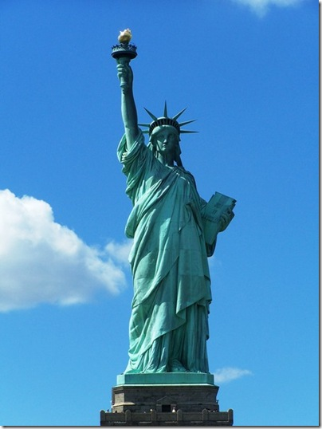

Нью-Йорк
Нью-Йорк — крупнейший город США, входящий в одну из крупнейших агломераций мира. Население города составляет 8 405 837 человек
Нью-Йо́рк — крупнейший город США, входящий в одну из крупнейших агломераций мира. Население города составляет 8 405 837 человек, агломерации — 20,63 млн (оценка на 2015 год). Нью-Йорк расположен на берегу Атлантического океана в юго-восточной части штата Нью-Йорк. Город был основан в начале XVII века голландскими колонистами и до 1664 года назывался Новый Амстердам
На территории, где ныне расположен Нью-Йорк, задолго до появления здесь европейцев жили индейские племена Манахаттоу и Канарси. Это подтверждают находки наконечников стрел и других артефактов в районах города, не застроенных зданиями, например, Инвуд-Хилл-парк и Риверсайд-парк. Европейские поселения появились здесь в 1624 году. В 1625 году на южной оконечности Манхэттена было основано голландское поселение Новый Амстердам (нидерл. Nieuw Amsterdam).
Нью-Йорк включает пять административных округов (районов, боро): Бронкс, Бруклин, Куинс, Манхэттен и Статен-Айленд. Основные достопримечательности расположены в боро Манхэттен. Среди них: исторические небоскрёбы (Эмпайр-стейт-билдинг, Крайслер-билдинг), Рокфеллеровский центр, Вулворт-билдинг, художественный Метрополитен-музей, Метрополитен-опера, Карнеги-холл, Музей Соломона Гуггенхейма (живопись), Американский музей естественной истории (скелеты динозавров и планетарий), отель «Плаза», отель «Уолдорф-Астория», отель «Челси», штаб-квартира ООН, Гарлем.
Статуя Свободы
Ста́туя Свобо́ды
Колоссальная скульптура в стиле неоклассицизма, расположенная в США на острове Свободы, находящемся в Верхней Нью-Йоркской бухте примерно в 3 километрах к юго-западу от южной оконечности острова Манхэттен. Была сооружена как подарок США от Франции ко Всемирной выставке 1876 года и столетию американской независимости. Является национальным памятником США. С 1984 года входит в список Всемирного наследия ЮНЕСК
Эмпайр-стейт-билдинг

Эмпайр-стейт-билдинг
Эмпайр-стейт-билдинг — 103-этажный небоскрёб, расположенный в Нью-Йорке на острове Манхэттен, на Пятой авеню между Западными 33-й и 34-й улицами. Является офисным зданием. С 1931 по 1970, до открытия Северной башни Всемирного торгового центра, был высочайшим зданием мира. В 2001 году, когда рухнули башни Всемирного торгового центра, небоскрёб снова стал самым высоким зданием Нью-Йорка. В настоящее время является третьим по высоте небоскрёбом в Соединённых Штатах, уступая Башне Свободы в Нью-Йорке, Уиллис-тауэр в Чикаго, и 35-м по высоте в мире. Архитектуру здания относят к стилю ар-деко. В 1986 году Эмпайр-стейт-билдинг вошёл в список национальных исторических памятников США, а в 2007 году под номером один — в список лучших американских архитектурных достижений по версии Американского института архитекторов. Зданием владеет и управляет компания W&H Properties, в настоящее время оно реконструируется за 550 млн долларов, 120 млн из которых идут на уменьшение энергопотребления.
Эмпайр-стейт-билдинг
Центральный парк
Центральный парк в Нью-Йорке является одним из крупнейших в США и известнейших в мире. Парк расположен на острове Манхэттен между 59-й и 110-й улицей и Пятой и Восьмой авеню и имеет прямоугольную форму. Длина парка — около 4 километров, ширина — около 800 метров, общая площадь — 3,41 км². Парк посещают примерно 25 миллионов человек в год, он является наиболее посещаемым парком в США, и его показ во многих фильмах и телевизионных шоу сделал парк одним из самых знаменитых в мире. Парк обслуживается Комитетом по охране природы Центрального парка, частной некоммерческой организацией, которая управляет парком по контракту с Департаментом парков и мест отдыха города Нью-Йорк. Проект парка был разработан архитекторами Фредериком Олмстедом и Калвертом Воксом. Последний позднее основал большой Проспект-парк в Бруклине. Несмотря на то что парк выглядит очень натурально, практически все ландшафты созданы вручную. В парке есть несколько искусственных озёр, большое количество аллей, два ледовых катка, уголки «нетронутой дикой природы» и лужайки, используемые для различных спортивных состязаний, а также детские игровые площадки и свой зоопарк.
Больше информацыи можно прочитать в Википедии